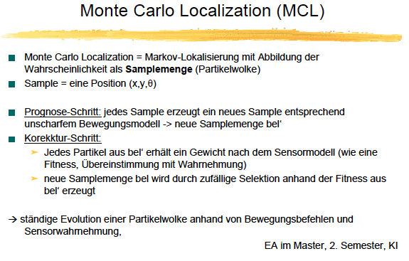

klausur ams
-------------Boersch--------------------
3 fragen pose, lokalisierungsarten, rel.pos.
odimetrie, sensoren, pqe, Codes, Bewegungsmodell, Fehlerquellen, Odemetrie, Fehlermodellierung,
- Definition service Roboter
- ist eine freiprogrammierbare Bewegungseinrichtung, die teil-oder vollautomatisch Dienstleistungenverrichtet
- fließender Übergang zu Industrierobotern und Manipulatoren
- Erklaeren sie Autonomie
- „sich selbst Gesetze gebend, Eigengesetzlichkeit Eigengesetzlichkeit“
- Entwicklung und Anpassung eigener Regeln und Strategien
- eigene Erfahrungen bestimmen das Handeln des Systems
- Aneignen von Kompetenz während der Interaktion mit der Umwelt
- Anwendungsfelder
- Professioneller Einsatz
- Industrieroboter/Manipulatoren z.B. Tankroboter, Roboterchirurgen, Fahrgeschäfte
- Automatisierung ausgereifter Technologien, z.B. Reinigungsroboter, Inspektionsroboter, Melken
- Neue Ideen, z.B. Fensterreinigung, Wachschutz, Planetenerkundung, Ernte, Medizinroboter
- Präzision
- Kraft und Steifigkeit
- Mehrachsigkeit(Minimal Invasive Chirurgie)
- Programmierbarkeit (Planung)
- Dokumentation
- Televerfügbarkeit
- Privater Einsatz
- Haushalt und Unterhaltung u.a.
- -----------keine Verschiedene Roboter lernen------------
- 3 Fragen der Roboternavigation(Selbstlokalisierung)
- relative Positionierung mit internen Sensoren: Odemetrie
- was ist Odemetrie
- Def.: Relative Positionierung mittels Beobachtung der Antriebsräder
- Antriebesabhängig
- Bsp: differentieller Antrieb
- Odometrische Sensoren (optische) = Encoderart
- Inkrementelle Encoder:
- Anzeige der Bewegung einer Achse Rades durch eine Impulsfolge
- Positionsverlust beim Ausschalten ==> Gelenke beginnen in
Endstellung
- Berechnung notwendig
- Bsp: Phase-Quadratur-Encoder am Pioneer
- Absolute Encoder:
- Anzeige der Position einer Achse durch eine Postionskodierung
- 1 Bit/Spur ==> Baugröße
- Bsp: Binärcode-Encoder, GrayCode-Encoder
- Phase-Quadratur Encoder
- Wie wird aus der alten Pos die neue berechnet
- Abhängig von Art des Antriebs (Pioneer: differentieller Antrieb)


- Fehlerquellen in der Odometrie
- Entfernungsfehler: Fehler beim Zurücklegen einer geraden Strecke
- Drehfehler: Fehler beim Drehen des Roboters
- Driftfehler: Orientierungsfehler beim Zurücklegen einer geraden Strecke
- systematische und unsystematische fehler
- Systematic Errors (kalibrierbar!!)
- Unequal wheel diameters.
- Average of actual wheel diameters differs from nominal wheel diameter
- Actual wheelbase differs from nominal wheelbase.
- Misalignment of wheels.
- Finite encoder resolution.
- Finite encoder sampling rate.
- Non-Systematic Errors
- Travel over uneven floors.
- Travel over unexpected objects on the floor.
- Wheel-slippage due to:
- slippery floors.
- overacceleration.
- fast turning (skidding).
- external forces (interaction with external bodies).
- internal forces (castor wheels).
- non-point wheel contact with the floor.
- 4 massnahmen um die fehler im griff zu haben
- Geeignete Odometrieräder
- Kalibrierung
- reduziert systematische Fehler
- Beispiel: Entfernungsfehler beim Pioneer
- Mehrmalige Testfahren mit Odometrie- und manueller Wegmessung
- Stichprobe -> fährt im Mittel x% zu weit oder zu kurz
- Anpassung des Umrechnungsfaktors c (c * Ticks = Weglänge)
- DistConvFactor in Parameterfiles *.p
- Verwendung von Richtungssensoren
- Richtung durch relative Messung (Gyroskope, Winkelgeschwindigkeit)
oder besser
- Richtung durch absolute Messung
- Abgleich mit Wahrnehmung (Beste Variante)
- Ständiger Abgleich der geschätzten Position mit aktueller Wahrnehmung der
Umgebung
- Landmarkennavigation, Probabilisitsche Lokalisierung in ARNL/ARIA
- Inertial Navigation Systems (INS)
- andere Form der relativen Positionierung
- Schiffe, Flugzeuge, offRoad
- Messung von Geschwindigkeit, Beschleunigung, Orientierung
- Traegheitsvariation
- Absolute Positionierung anhand von Landmarken
- Grundidee: Positionsbestimmung anhand natürlicher oder künstlicher Landmarken mit bekannter Position
- Landmarke: „place of interest“ “distinct feature” “Merkmalscluster”
- Landmarke Def.:
- Ein Objekt/Merkmal mit folgenden Eigenschaften:
- Wahrnehmbarkeit (Funktion der Sensorik, Blickwinkelabh.)
- Informationsgehalt (Häufigkeit, Stationarität, Eindeutigkeit)
- Bekannte Position im Weltmodell
- Relativer Positionsbezug bestimmbar (Entfernung, Winkel,
Entfernungsdifferenz zweier Landmarken, Detektionsbereich o.ä.)
- ARTEN:
- beispiele nat landmarken
- Bergspitzen, einzelne Bäume,
- Wände, Kanalabzweige, Bürotüren, Ecken, Säulen,
- Deckenbeleuchtung, Sterne, Sonne
- Magnetfeld, Flüsse, Strömungen und vieles mehr
- lm-algorithmus
- Probabilistische Positionierung
- leistungsfähiger, verbreiteter Ansatz
- vereint relative und absolute Postionierung als
Bewegungsmodellierung und Wahrnehmung der Umwelt
- in ARIA umgesetzt in ARNL, Methode: Monte Carlo Localization
- MARKOV
- Das Ziel der Markov Lokalisierung ist es, Wahrscheinlichkeiten fur das Eintreten
zukunftiger Ereignisse anzugeben.
- Die aktuelle Position hangt nur von der vorhergehenden
- Position und dem Bewegungsbefehl ab und die aktuelle Beobachtung
hangt nur von der aktuellen Position ab.
- Es ist ein zellbasiertes Verfahren bei dem
jeder Zelle Wahrescheinlichkeitswert oder Belief zugeordnet wird. [Zweigle]
- Jede Bewegung
des Roboters verschiebt die Wahrscheinlichkeiten und streut sie und jede Messung von Merkmalen der Umgebung andert die Wahrscheinlichkeiten.
- Wenn die
Position unbekann ist erfolgt eine Gleichverteilung. Das Problem dabei ist, dass alle Werte(Zellen) nach jeder Bewegung neu berechnet werden muessen
- Es gibt nur eine mogliche Position des Roboters und eine unsicherheit wird dabei
nicht reprasentiert.
- Grundidee:
- Belief als Wahrscheinlichkeitsverteilung,
- die sich bei Bewegung und Wahrnehmung ändert.


- mcl

- andy in mcl

- Karten (Weltmodell, eine Wissensrepräsentation)
- geometrische Karten
- Gittermodell mit euklidischen Koordinaten
- zusammengesetzt aus attributierten Kachelelementen
- analog Pixelbild in der Bildverarbeitung => intuitiv verständlich
- gedachtes Netz über die Umwelt
- Unsicherheit abbilden: Kachelwerte aus dem Intervall [0,1]:
- Interpretationsvarianten:
- z.B. evidence grids(Moravec, 1985, Navigation eines AMR mit Sonar)Gewissheit, dass sich in der Kachel ein Objekt befindet
- Wahrscheinlichkeit, dass die gesamte Kachel frei ist
- Anteilder besetzten Fläche in der Kachel ...
- Probleme:
- Kachelgröße
- Kleine Kacheln: Speicherplatz und Rechenzeit
- Große Kacheln: keine Darstellung kleiner Objekte, kleiner Freiräume
- Eine Lösung: Quadtree(flexible Auflösung)
- Topologische Karten sind Graphen
- Knoten: Orte mit entscheidungsbestimmenden Situationen (Beschreibung der Orte)
- Kanten: relative Positionen, Wege, Aktionen zwischen diesen Orten, Beziehungen => Bsp (Randow, 1998)
- Der menschlichen Vorgehensweise ähnlicher als geometrische Karten
- Höherer Abstraktionsgrad
- Speicherplatzsparend
- Anwendung: Globale Navigation, XAVIER, CMU
- Karten in ARIA
- Geometrische Karte mit topologischen Elementen
Verwendet als
- A) als Karte in ARIA (ARNL, SONARNL, Actions …) und
- B) als Welt im Simulator
- ASCII-File im MapFile-Format mit Endung .map
Manuell bearbeiten oder mit Mapper3
- Aufbau des Files:
- 1. Metadaten (Eigenschaften der Karte, Kartenobjekte, neue Klassen)
- 2. Daten
- Daten = Wahrnehmbare Objekte
- Punkte(für Lokalisierung mit dem Laserscanner)
- Linien(für Lokalisierung mit den Sonarsensoren)
- Fahrplanung
- lokale = r. navigiert innerhalb seiner sensorreichweite
- globale = hat karte aber kann es nicht direkt sehen und plant in dieser karte
- kriterien fuer einen guten pfad
- 2 methoden der fahrplanung
- visibility graph
- potentialfaelle (ist in aria)
- potentialfeld ausrechnen -> vektorfeld ausrechnen -> value iteration
folie 41
- Def Serviceroboter!2, Autonomie5, Automatik3, Arten13, Einsatzkriterien18
- NAV1
- 3 Fragen1.4, Pose1.5, Lokalisierungsarten!1.6, rel. Pos.!1.7,
- Odometrie1.8, Sensoren1.9, PQE1.10, Codes1.13, Bewegungsmodell1.16, Fehlerquellen1.19, Fehler-Modellierung1.20, Positionsunsicherheit1.23, Gegenmaßnahmen 1-4 1.25..1.27, INS1.31
- Abs. Positionierung!1.32, LM, Arten1.33, Bsp. nat. Landmarken1.34, ISR-2D1.46, LM-Algorithmus!1.49
- Prob. Lokalisierung!1.53, ARNL1.54, Markov-Lokalisierung!!1.55, Grundidee1.56, Repräsentation der W-Verteilung1.57, Multiple Hypothesen1.59, Andy!1.62-64, MCL1.65, Andy in MCL!1.68
- NAV2
- Karten!2.5+2.6, Geom. Karten!2.7+2.8, Probleme geom. Karten2.9, Topologische Karten!2.13, Karten in ARIA2.17
- Lokale und globale Nav.2.26, Optimalitätskriterien2.27, Visibility-Graph!2.30,
- Potentialfelder2.39..42, Vektorfeld, komplettes Beispiel, Value iteration*
- ALV-Grundidee*
-
- ! wichtige Folie
- * interessantes Detail
------------------------------------LOOSE-----------------------------------------
- 1.vorlesung
- wie ist roboter aufgebaut
- sensoren -> welche sind drin
- grobe funktionsprinzipien
- 2. Vorlesung
- simulator
- Wie sieht eine maps im Simulator aus
- grundprinzip des arnetworking
- gps
- Def.
- Funktionsweise
- Kenndaten (Anz. Satelliten)
- gps std Protokoll lesen koennen
- gds84 , referenzelipsuiden, (Ref. Impelementierung)
- was sind utm systeme
-------------------------------HEINSOHN-----------------------------------------
- aria architektur / Komponenten(Folie 2 Graphik lernen!!!!!)
- client server arch. mit und auch ohne arNetworking
- syncronisierungszyklus folie 23 (welche pakete werden abgeschickt mit welchem inhalt)
- 3 ebenen der robotersteuerung
- aktionen in aria
- allg. kontrollstruktur
- klassische(horizontal, vertikal) vs subsumtion
- Subsumation: Folie 22 -> was passiert eigentlich wenn dort verschiedene zugriffe auf die kanaele erfolgen
- PRIORITAETEN + AKTIVIERUNGSGRADE (Formeln)